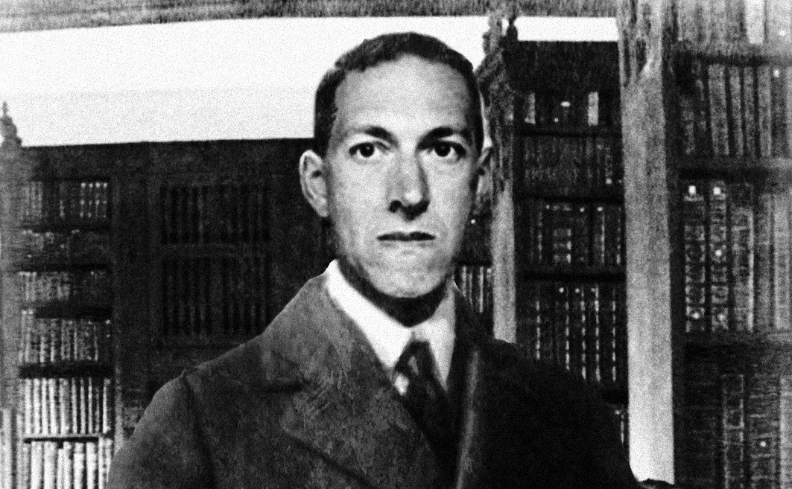
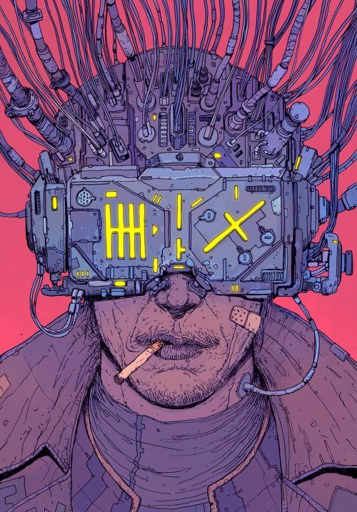

No bairro de Parelheiros, da foto acima, no século 31, onde houveram uma série de acontecimentos misteriosos envolvendo nanotecnologia experimental em cavalos, com a intenção de torná-los racionais. Tudo começou com Cari, a criança de 8 anos filho de um camponês dono de uma fazenda onde se cultivava árvores de microchips controladores, você deve se perguntar "Ainda existe isso?", e eu lhe digo com toda certeza que sim, e acrescento dizendo que a raiz dos últimos acontecimentos vieram daí. Cari saiu para o treino matinal de corrida lógica pois estava tentando a meses alcançar o primeiro emprego na área de coleta de reciclagem memorial. No meio de sua corrida se deparou com um carro vermelho nada parecido com algo daquela época, achou espantoso as 3 letras em prata na parte de trás do carro formando a palvra "uno". Olhou em volta e não viu nada fora do normal, exceto por uma fonte de luz intensa que vinha de um ponto no meio das árvores ao lado da estrada onde corria. Deixou se levar pelos instintos que floresciam tão naturalmente quanto o movimento e foi até o ponto de luz, a grama estava em seu peito, porém já não sentia nenhuma espécie de frio na barriga diferente dos seus ancestrais, pois as ameaças já haviam sido extintas a umas centenas de anos. Conforme se aproximava escutava um burburinho que ia aumentando, ao chegar cada vez mais perto diminuia o rítmo dos seus movimentos. E quando pôde olhar o que acontecia sem interferência da grama que antes estava a sua volta, viu uma cena que imediatamente foi captada por suas iris inteligentes, um homem fazia perguntas a algo, ou alguém, que respondia submissamente, o homem instigava a criatura a responder fora do habitual, com uma tentativa falha de emancipação. Pois a cada vez que obtia uma resposta livre de qualquer tipo de anti-liberdade uma luz era emitida nas suas costas vindas da espinha dorsal. Cari tentou sair pelo mesmo lugar de onde veio, nesse momento a criatura desviou o olhar para a posição onde estava a criança. O misterioso homem tornou o olhar para o mesmo lugar e observou espantado e conegelado a cena que via como se soubesse que seria preso pelo o que estava fazendo. Os pontos da investigação terminam aqui, as memórias de Cari após os acontecimentos foram obliteradas e os cirurgiões técnicos da coleta de memória ainda não obtiveram nível lógico para recuperar, não sabemos quanto tempo temos até resolvermos isso, e não temos nenhuma pista do homem misterioso que apareceu em suas memórias coletadas.
 